An exploratory analysis of residential property prices, focusing on the characteristics associated with SalePrice, data quality, statistical distributions, outliers, transformations and feature engineering.
The objective of this project was to understand the factors associated with residential property prices and prepare the dataset for further predictive modeling.
Understand which property characteristics show stronger relationships with house selling prices.
Performed data quality analysis, missing-value treatment, outlier analysis, distribution analysis, transformation and feature engineering.
Identify meaningful patterns and prepare a reliable analytical dataset for future predictive modeling.
Rather than treating the dataset as a collection of columns, the analysis was structured around questions that could help understand residential property values.
Missing values were investigated before applying imputation. In several categorical variables, missing values represent the absence of a property feature rather than random missing information.
PoolQC Missing
MiscFeature Missing
Alley Missing
Fence Missing
High missingness in variables such as PoolQC, Alley, Fence and MiscFeature largely reflects properties where these features are not present. This distinction is important because missingness can carry business meaning rather than simply representing incomplete data.
SalePrice was examined using its distribution and skewness to understand the shape of the target variable.
The distribution is positively skewed, with a skewness value of approximately 1.45.
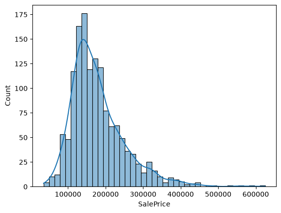
Most properties are concentrated toward the lower and middle price ranges, while a smaller number of high-priced properties extend the right tail.
OverallQual shows one of the strongest relationships with SalePrice in the dataset.
Both the box plot and average-price analysis show a clear upward pattern as overall quality increases.
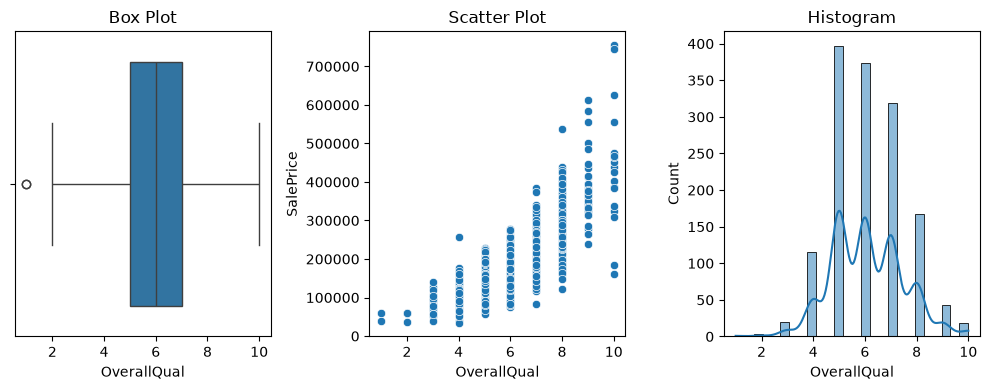
Higher overall quality is strongly associated with higher selling prices. OverallQual had a correlation of approximately 0.79 with SalePrice, making it one of the strongest numerical indicators examined.
Neighborhood was analyzed to understand how selling prices differ across locations.
The analysis showed substantial variation in property prices across neighborhoods.
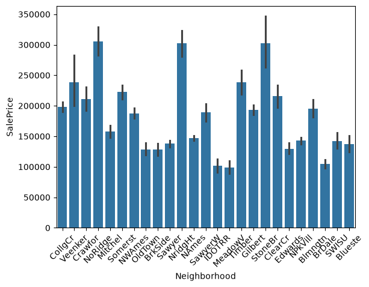
Neighborhoods such as Crawfor, Sawyer and Gilbert showed higher observed price levels in the dataset, while SawyerW, IDOTRR and Blmngtn were among the lower-priced groups observed in this analysis.
The scatter plot shows a positive relationship between above-ground living area and selling price.
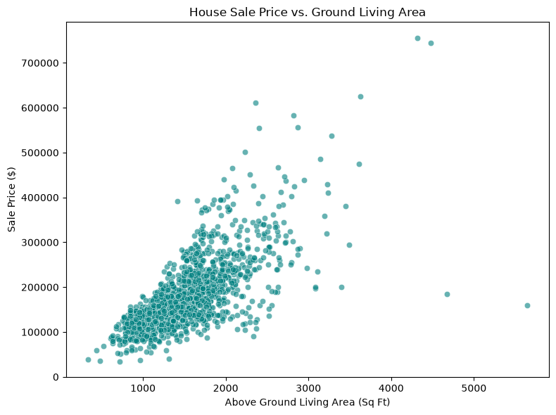
GrLivArea has a strong positive linear association with SalePrice. However, the variation in prices among properties of similar size indicates that size alone does not explain the entire price.
Basement size was investigated as another measure of usable residential space.
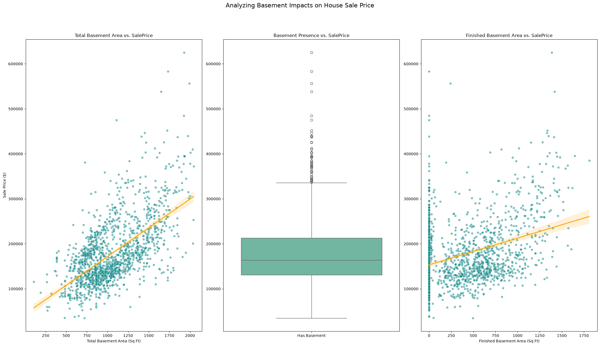
Total basement area shows a positive association with SalePrice. The relationship should be interpreted alongside overall quality, above-ground living area and other property characteristics.
Garage characteristics were investigated to determine whether additional garage capacity is associated with higher property prices.
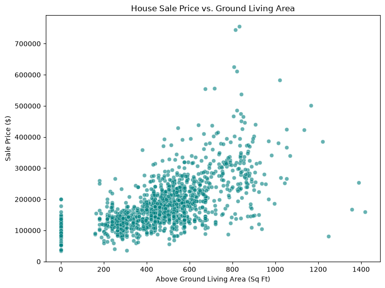
Garage area shows a moderately strong positive association with SalePrice. The relationship suggests that garage capacity is useful information, although it is not a standalone explanation of price.
Most properties in the dataset contain approximately two to four bedrooms. Bedroom count alone shows a relatively weak linear relationship with price.
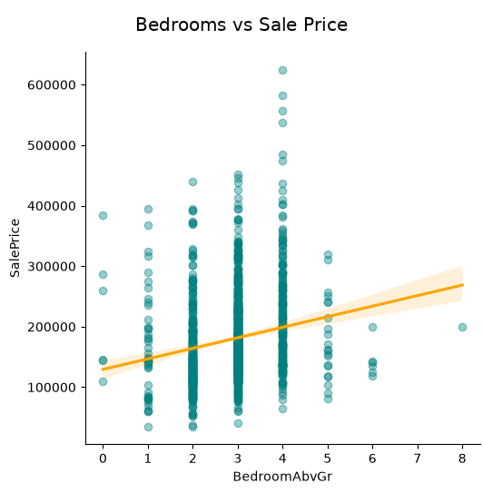
Bedroom count has a relatively weak linear association with SalePrice. This suggests that simply increasing the number of bedrooms does not necessarily translate into proportionally higher selling prices.
Most properties contain one or two full bathrooms, while a smaller number contain three or more.
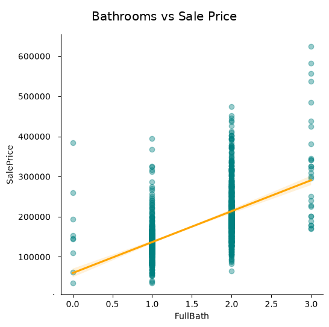
Bathroom count shows a stronger positive association with SalePrice than bedroom count, although other property characteristics also contribute to price.
House age was derived from construction year and selling year to create a more interpretable feature.
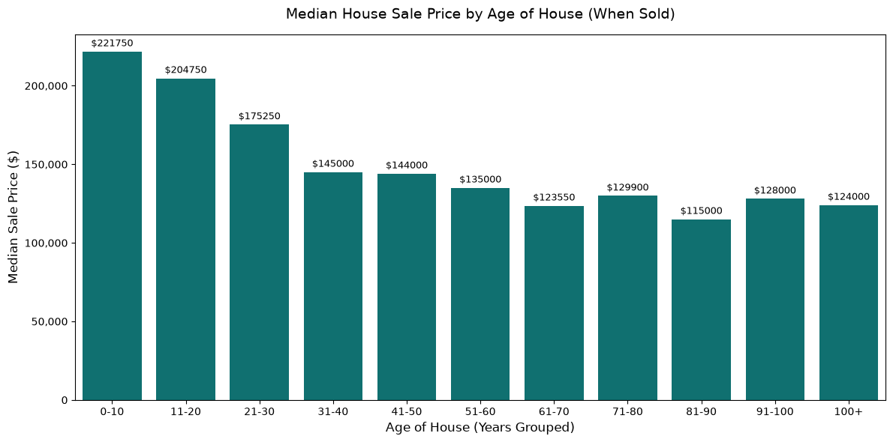
Newer properties generally show higher observed selling prices in the dataset. Creating HouseAge provides a more business-friendly representation than using construction year alone.
A new feature was created using the year sold and year of the most recent remodeling.
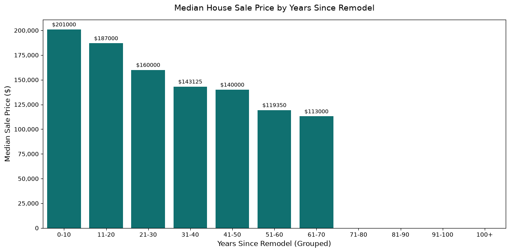
Recently renovated properties showed higher observed selling prices in the analysis. The engineered YearsSinceRemod feature makes this relationship easier to investigate than the original year field.
Highly skewed variables can affect statistical analysis and machine-learning algorithms. LotArea was therefore investigated and transformed using the Yeo-Johnson transformation.
LotArea showed extreme right skewness with a skewness value of approximately 12.2.
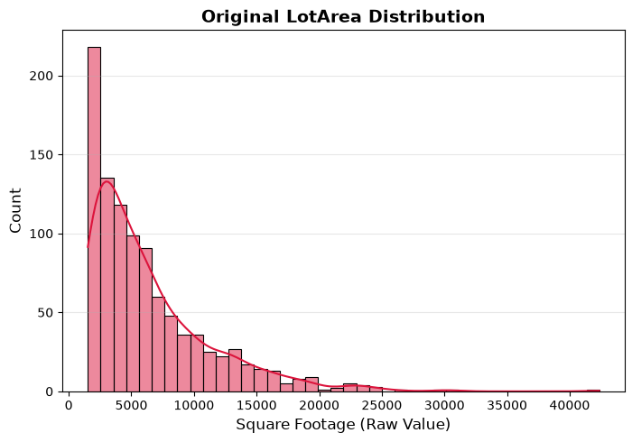
After transformation, the skewness reduced to approximately 0.02.
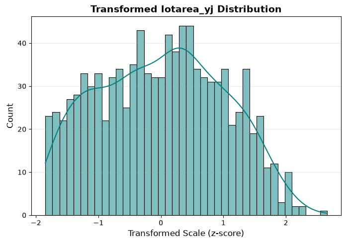
Yeo-Johnson transformation substantially reduced the skewness of LotArea, producing a much more balanced distribution.
Correlation analysis was used to identify numerical variables with stronger linear associations with SalePrice.
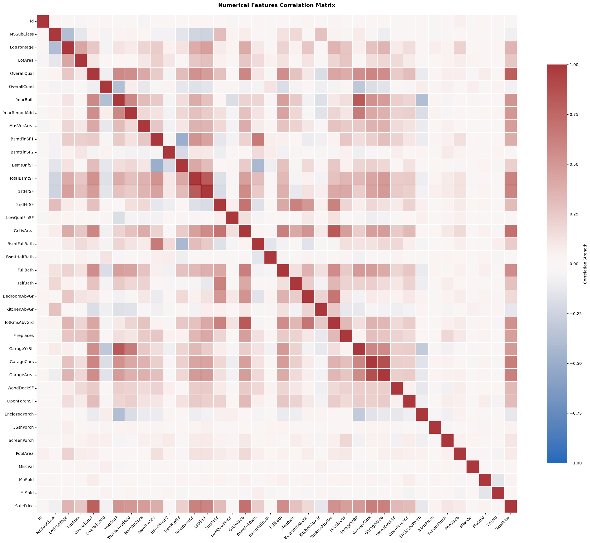
| Feature | Correlation with SalePrice |
|---|---|
| OverallQual | 0.792 |
| GrLivArea | 0.722 |
| GarageCars | 0.650 |
| TotalBsmtSF | 0.614 |
| FullBath | 0.584 |
| YearBuilt | 0.534 |
| YearRemodAdd | 0.523 |
OverallQual, GrLivArea, GarageCars, TotalBsmtSF, FullBath, YearBuilt and YearRemodAdd show relatively stronger linear associations with SalePrice. These relationships indicate useful variables for further investigation, but correlation alone does not establish causation.
Feature engineering was used to convert raw columns into variables that are easier to interpret from a property and business perspective.
| Engineered Feature | Concept | Purpose |
|---|---|---|
| HouseAge | YrSold - YearBuilt | Measures property age at the time of sale. |
| YearsSinceRemod | YrSold - YearRemodAdd | Measures how recently the property was remodeled. |
| TotalSF | Basement + 1st Floor + 2nd Floor | Represents total usable residential space. |
| TotalBath | Full + Half Bathroom Components | Creates a combined bathroom measure. |
| TotalPorchSF | Combined porch/deck areas | Represents total outdoor covered/open space. |
OverallQual showed the strongest observed linear association with SalePrice among the analyzed numerical features.
GrLivArea showed a strong positive association with SalePrice, although property size does not explain all price variation.
Selling prices varied substantially across neighborhoods, indicating that location is an important dimension for further analysis.
Garage capacity and basement area showed positive associations with SalePrice and provide useful additional information about property value.
Newer properties generally showed higher observed selling prices, motivating the creation of the HouseAge feature.
Yeo-Johnson transformation reduced LotArea skewness from approximately 12.2 to 0.02, substantially improving its distribution.
This analysis demonstrated that residential property prices are associated with multiple dimensions of a property, including overall quality, living area, basement space, garage capacity, construction year, renovation history and neighborhood.
The project also demonstrated the importance of data preparation. Missing values were investigated according to their meaning, outliers were evaluated, skewed variables were transformed, and new features were engineered to create more interpretable measurements.
The analysis provides a structured foundation for the next stage of the project: predictive modeling and evaluation of different machine-learning approaches.